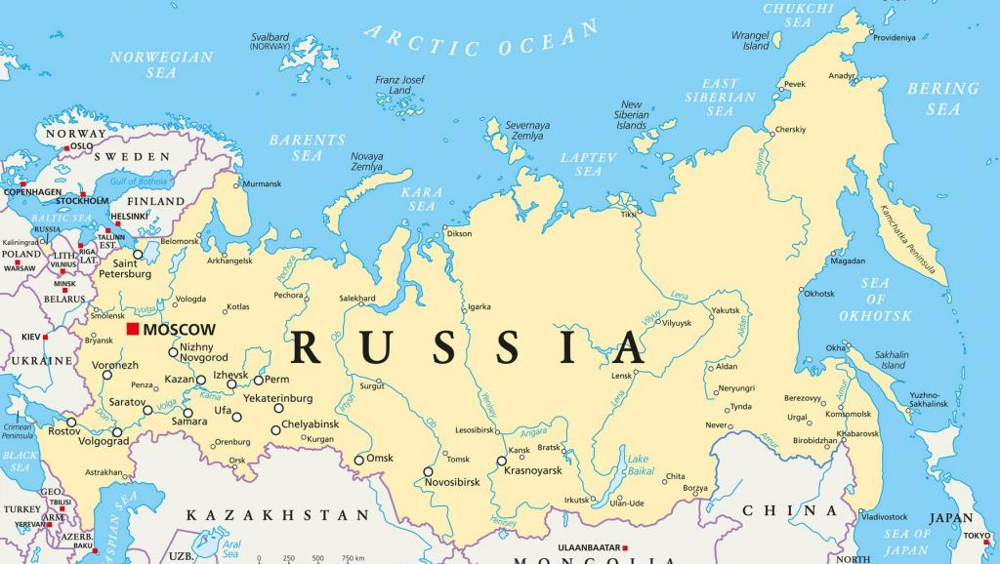

Россия
Росси́я, официально также Росси́йская Федера́ция[e] (РФ[f]) — государство в Восточной Европе и Северной Азии.
Территория России в рамках её конституционного устройства составляет 17 125 191 км²; население страны (в пределах её заявленной территории) составляет
146 781 095чел. (2019). Занимает первое место в мире по территории, шестое — по объёму ВВП по ППС и девятое — по численности населения.
Столица — Москва. Государственный язык — русский.
Президентско-парламентская республика с федеративным устройством. С 7 мая 2012 года пост Президента занимает Владимир Путин. C 8 мая 2012 года пост
Председателя Правительства занимает Дмитрий Медведев.
В состав Российской Федерации входят 85 субъектов, 46 из которых именуются областями, 22 — республиками, 9 — краями, 3 — городами федерального
значения, 4 — автономными округами и 1 — автономной областью. Всего в стране около 157 тысяч населённых пунктов.
Россия граничит с шестнадцатью государствами (больше, чем любая другая страна в мире), а также двумя частично признанными государствами.
Россия — многонациональное государство, отличающееся большим этнокультурным многообразием. Бо́льшая часть населения (около 75 %) относит себя к
православию, что делает Россию страной с самым многочисленным православным населением в мире.
Ядерная держава; одна из ведущих промышленных и космических держав мира; занимает 2-е место в рейтинге самых влиятельных стран мира
(2019). Русский язык — язык мирового значения, один из шести официальных и рабочих языков ООН, ЮНЕСКО и других международных организаций.
Россия занимает 2-е место в рейтинге самых читающих стран мира; 2-е место в рейтинге лучших программистов мира; 1-е место в мире по
количеству граждан, получающих инженерное образование; один из мировых лидеров по запасам полезных ископаемых и технологиям их переработки.
Россия является постоянным членом Совета безопасности ООН с правом вето; одна из современных великих держав мира.
После распада СССР в конце 1991 года Российская Федерация была признана международным сообществом как государство-продолжатель СССР в вопросах ядерного
потенциала, внешнего долга, государственной собственности за рубежом, а также членства в Совете Безопасности ООН. Россия состоит в ряде международных организаций:
ООН, ОБСЕ, Совете Европы, ЕАЭС, СНГ, ОЧЭС, ОДКБ, ГКМЧП, ВОИС, ММО, ВТО, ЮНВТО, ВФП, ШОС, АТЭС, БРИКС, КООМЕТ, МОК, МЭК, ISO, EUREKA, IRENA, G20 и других.
По данным Всемирного банка, объём ВВП по ППС за 2017 год составил 3,817 трлн долларов (25 532 долларов на человека), по данным МВФ — 4,008 трлн долларов.
Денежная единица — российский рубль.